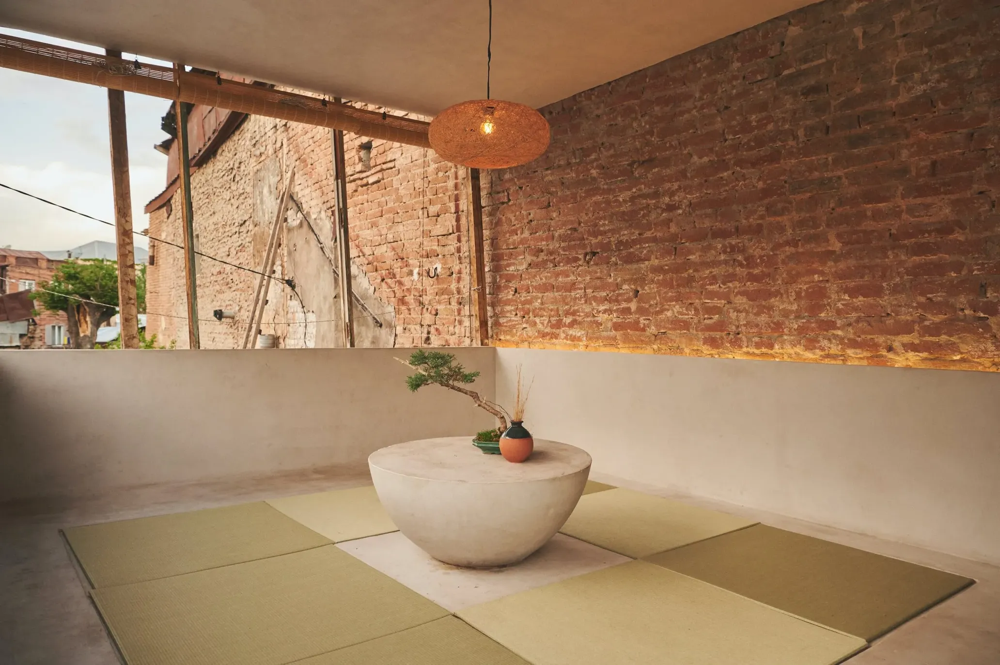
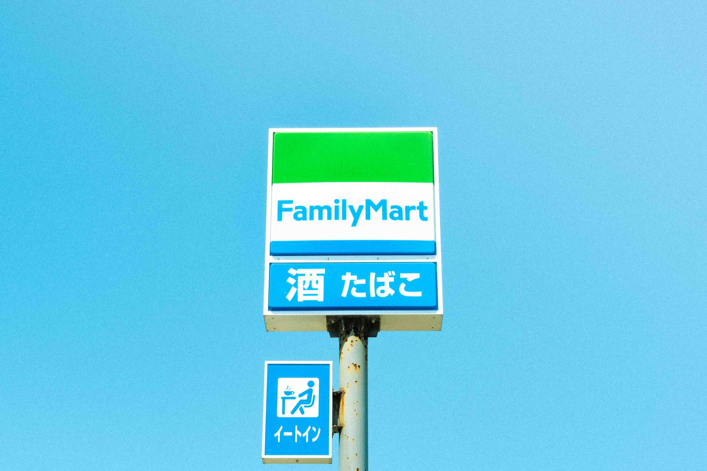

Is this all there is to it?
So strange how the mind adapts to any community it finds itself inside of. What people talk about, what people wear, what kinds of tacit and implicit rules exist -- it all affects your desires, values, and the very perception of reality. In the moment, it feels absolute and as if everywhere is like here, more or less. But once you change your environment, all the sand castles you erected just crumble, for new sand castles to be built.
令和4年10月22日
The liberated one
There's a Bangladeshi guy who lives next door. When I meet him in the kitchen or the corridor, he greets me with a slight nod and a blissful smile. Not a hint of negative emotion in his eyes -- he silently wishes you all the best. He empathizes with your suffering. He's so calm it permeates all his body and spills into his surroundings; I always contract the peacefulness and feel super calm and blissful for about one minute after I've seen him in the corridor -- sometimes I even smile a bit -- then I remember that I need to do this-and-that and haven't yet done the homework for tomorrow, etc. -- the next thing I know I find myself lost in worrisome thought again.
I once asked him if he feels as calm inside as his outside appearance suggests. He answered that indeed he feels calm. So far I have come up with two explanations:
1. He stealthily smokes all day in his room
2. He meditates all day in his room; through meditations, he's reached Nirvana but chosen the way of a Bodhisattva instead of forever exiting the world of suffering -- he's decided to stay on Earth to rescue his fellow humans by showing them the way to true calmness
Whichever it is (perhaps there's a third way I'm unaware of,) he's truly a remarkable person.
令和4年10月20日
In Praise of Simplicity
I'm currently reading "The Book of Tea" by Kakuzō Okakura written at the beginning of the XX century. Okakura learned English when young; his fluency in English allowed him to uncover to the Western audience the Japanese take on drinking tea (or "Teaism," as Okakura calls it) along with the accompanying philosophy, aesthetics, and architecture. He gives a detailed description of what a tea room must look like and why. Much effort is put into making the room simple and devoid of the unnecessary to accent the beauty of what is present. "One cannot listen to different pieces of music at the same time, a real comprehension of the beautiful being possible only through concentration upon some central motive."
I can certainly relate to that--a tea room offers quite a different experience compared to a western room. Before moving to Japan, I lived in a squat-like community space called "Uzu" in Tbilisi, the capital of the country of Georgia. There were a typical western living room on the 1st floor and a tea room on the 2nd floor. The living room was a mix of armchairs, a couch, two tables and the mysterious redness flowing down from a ceiling light. Books, paintings, and other decorative and practical objects were abundant. The tea room wasn't an orthodox XVII century tea room but rather a fusion with modernity: a light-grey concrete low round table surrounded by tatami mats, bamboo blinds, one wall was a century-old red brick of an adjacent building, the other walls were light-grey, of the material of the low table.
Okakura would have approved of that tea room because it conformed to the canons of simplicity--the only decor in the room was a bonsai tree and a vase for flowers. Okakura himself writes, "That the tea-room should be built to suit some individual taste is an enforcement of the principle of vitality in art. Art must be true to contemporaneous life. It is not that we should ignore the claims of posterity but that we should seek to enjoy the more."
The most striking difference between the armchair living room and the tatami tea room was that the latter always felt different. The living room never changed as if carved in stone, people were mere insects unable to alter the perception of it. On the other hand, depending on who was in the tea room and what mood prevailed, the atmosphere, the "energy" (pardon for the newagey word) differed drastically. A depressed person took off their shoes and entered the room--you could feel the walls assume darker color, the light dim, the air thicken and weigh on your shoulders. The room was a merry summer carnival when people from different cultures gathered, a black guy with dreadlocks energetically playing the guitar. It was a museum of Japanese culture when Japanese people were pulling all-night mahjong games, four players sitting cross-legged. The tea room was versatile and malleable, a vehicle ready to assume the form of whatever and whoever was inside.
Oh, the various pictures of the tea room coming up in my head as I try to remember all times I've been in it! The tea room was a blank slate, a white piece of canvas for people to gather and create something new and unique. That tea room was a piece of meta-art indeed.
令和4年9月10日
In Praise of Tea
Japan is the land of alcohol. It allows the Japanese to take off the tatemae mask, open sliding doors of the rigid hierarchy, and have an excuse to behave more freely (maybe even step up and talk to one's boss as if he's a human being like oneself.)
The Japanese National Tax Agency announced a campaign to advertise alcohol to the youth to raise the number of young drinkers, which is on the decline. They would surely advertise heroin if it was taxable.
A typical convenience store sign luring in passer-bys by 酒 [alcohol] and たばこ [cigarettes.]
It is my act of civil disobedience to imbibe the green tea instead--the drink praised by ancient poets. Here is a great trip report by Lu Tong--a describtion of his study of the effects of each of 7 cups of tea he drank back in VIII century. As the poem is in classical Chinese, it can generally be appreciated in its original by a fluent reader of Japanese, too.
| 一碗喉吻潤， | The first cup moistens my lips and throat, |
| 兩碗破孤悶。 | The second cup breaks my loneliness. |
| 三碗搜枯腸， | The third cup searches my barren entrail |
| 惟有文字五千卷。 | But to find therein some five thousand volumes of odd ideographs. |
| 四碗發輕汗， | The fourth cup raises a slight perspiration,— |
| 平生不平事，盡向毛孔散。 | All the wrong of life passes away through my pores. |
| 五碗肌骨清， | At the fifth cup I am purified; |
| 六碗通仙靈。 | The sixth cup calls me to the realms of the immortals. |
| 七碗吃不得也， | The seventh cup—ah, but I could take no more! |
| 唯覺兩腋習習清風生。 | I only feel the breath of cool wind that rises in my sleeves. |
| 蓬萊山， 在何處？ | Where is Horaisan? |
| 玉川子乘此清風欲歸去。 | Let me ride on this sweet breeze and waft away thither. |
Beatiful, right? I very much concur with the sudden finding within of "some five thousand volumes odd ideographs" after the 3rd cup--I'm exactly over my 3rd cup as I'm writing these lines.
令和4年9月09日
I Tried to Meet God but He Wasn't There
Yesterday I was riding my bike along the wide Hirose river when I noticed that I'm not covered in sweat as I would usually be. The weather was pleasantly warm with a slight breeze. "It looks like the sultry summer is over," I thought. You know how when fall is about to come colors become more vivid and the visual field itself is more detailed? And still every time it comes, it's as if it's for the first time. Then winter will come with its snow, and I'll forget what it's like to bathe in the moist summer heat. Then spring, and then summer again--till I die.
I had a sudden desire to feel religious, to feel something greater than my own petty life. I also felt a pull to my own culture and tradition, the roots that brought me here. So this morning I went to a Sunday mass at a Russian Orthodox Church in Sendai (surprisingly, there is one.) On the outside the church looked like someone took a picture of a proper Russian church and then applied the "Japanese downtown filter": a pale concrete building looking very organic in a row of 50-story high office buildings.
When I join religious people in their worship, I perform all activities required to allow myself to feel unity with the others, so when I entered the church I made a cross with my hand and bowed three times because that's what you're supposed to do. There were around 13 Japanese (3 of them priests) and 3 Russian-looking people. Only a couple of Japanese women were wearing scarves (they looked exotic.) Chairs filled the center of the room--the church had a Western feel because in Russian Orthodox churches there are no chairs, maybe some benches adjacent to walls for the elderly. Russian icons, candles, and a spacious ceiling with wide windows at the very top, in the dome.
The mass was in Japanese, I couldn't follow the kind of Bible Japanese they used, so the entirety of the mass I was looking around trying not to miss on what I was expected to do and looking at the wide sunfilled windows at the top trying to evoke religious feelings. But alas, I had none.
I'm not acquainted very well with how the Christian mass is structured. There was a time in the ceremony when most of the people lined up to receive a small spoon of something. It was a bit comical how they took off their masks to receive the something from a spoon everyone else had in their mouths and then religiously put their masks back on. The main priest was holding a golden plate with the "sacred food", two others were standing to the sides of him holding a red cloth as if to prevent the sacred food from falling should the main priest miss someone's mouth. When my turn came up, I lowered my head to level with the cloth and opened my mouth. The main priest glanced at me then said, not speaking to me, "この人は駄目だ" [This one, no for him.] Then he looked the room over and yelled, "通訳！" [Translator!] Then the translator explained to me that I couldn't do that if I hadn't confessed in the morning. I apologized for not knowing the ritual. The translator pointed me to the bread and wine, and so I obediently imbibed the blood and flesh of Christ.
How the main priest behaved felt repulsing to me. He didn't talk to me directly. "We have our own thing going here, I am at the top of this community, and this rude outsider is in the way, someone, take care of it quickly."
This is kind of Japanese reaction to a foreigner is not rare. Many pretend not to notice you. When my tutor and I went to the city office to do some paperwork, although it was clear that I could functionally speak, read, and write Japanese, a bureaucrat who we were talking to never looked at me and for the duration of the process was speaking to my tutor only, even when my answer was required. Even though there is no direct offense, to me it feels quite offensive when other humans behave as if I am not another human being standing right in front of them capable of the same things as them. Especially it felt weird in a place of worship of my own Russian tradition.
In the church I didn't have any religious feelings nor did I feel any closeness to my culture. I hadn't drunk alcohol for close to a year, so when I went outside, the only thing I felt was mild alcohol intoxication from the "blood of Christ."
令和4年8月28日
I Love Facemasks
The way most Japanese females dress is quite conservative, comparing to other countries. Long skirts or baggy pants, oversized t-shirts. If it's a dress that's supposed to reveal some upper torso skin, there's surely a shirt underneath making sure not to reveal anything. This is complemented with a facemask that (literally) every Japanese is still wearing. So in the end a female has all attractive parts of her body concealed--a Japanese hijab!
In the beginning it was slightly strange as my main entertainment when walking in the street back when I was in Russia or Georgia was admiring the glimpses of the beauty of passing females. Now that I got used to it that the Japanese beauty is concealed under the unpenetrable Oriental hijab, I find great relief in it, because it does not fuel one's sexual desire, and in the end, one can use the walking time for other thoughts, such as pondering philosophy.
令和4年8月26日
Relic from the Past
I've been grappling with Adam Smith's classic "The Wealth of Nations" for a while now. A bit lost in bushels of rye produced in Scotland in 1755, I decided to boost my interest in the book by getting an actual physical book instead of the pdf file. Was I surprised when I found a 1922 edition of the book in my univestiry library! I brought it home and started inspecting thoroughly.
It looked exactly like you'd expect a 100 year-old book to look: a green khaki cover was ripped at the edge, pages were slightly yellow with brown stains near the margins. If felt special to be in temporary posession of such a relic. On the first page there was a stamp that said 東北帝國大學圖書館 ・ 昭和３年７月２１日受入 [Tohoku Impreial University Library ・ Received on 21 July of 3 Year Shōwa Era.]
Throughout the book there are marks of the Japanese student who studied it. Because the person had written in the old script, I assumed they read the book before the war. Translations of English words and cirles around prepositions like "it" or "them" with an arrow of what the preposition refers to like "money" or "goods." I also discovered a page from a notebook with notes on chapter 3 with words 経済学部 [Economics faculty] printed on top of it. I wondered where this Economics major ended up. Perhaps in a Japanese ministry of Economics? Considering that he was a prominent student to have read this book in original and that he graduated the Tohoku Imperial university (which was considered 3rd best in the country), there's high probability that he went far.

令和4年8月18日
Japanese Newspaper
Every morning a person on a motorbike delievers a local newspaper 河北新報 [Kahoku-shimpō] to the place where I live. Manager of the building takes it out of the plastic wrapping and hangs it on a special metal tube in the hall. I've never seen anyone read the daily newspaper, so I decided to be the first one (on that day, at least .)
The front page was filled with politics. A town major decided to rebuild delapidated fishing ports that took damage during the 2011 earthquake and tsunami. Some Liberal Democratic Party members are suspected to have ties with the Unification Church, etc. I thought that it's a kind of paper elderly people would be interested in.
Then two advertisment leaflets fell out of the paper. One was from a real estate agency. A picture of a newly-wed smiling couple about to get their starter home. The ad also invites you to a lecture organized by the agency that "お金 ⋯ に関する疑問や不安の解消に役立ちます。[will help you resolve doubts and worries about money (and other things.)]" That's a pretty straightforward way to go about it!
Another leaflet is offering... a place at a cemetery! Among other great things about this new cemetery at Nantoka-Megane Bridge is that it's 好評 [receiving favorable reviews.] Make sure to grab your spot for only 180,000 yen! (50 years cemetery usage fee is included; you can enshrine up to 2 霊 [souls] in one spot.)
After the initial "what a clever way to cheat people's money out of them!" response I remembered that I had an impression that it's mostly elderly people who would read a paper like Kahoku-shimpō. Then I saw it: a 70 year old gentleman is sitting in his tatami-floored living room. From the kitchen, where his wife is cooking dinner, the sounds of a TV news program can be heard. He puts down his hand fan when the cemetery ad falls out of the newspaper. He starts thinking. Here they offer to pray for your after-death happiness for long years. The cemetery looks pleasantly sunlit under the watch of a marble statue of a buddhist god and next to a little grove. What is mere 180,000 yen comparing to a good place where one will stay for eternity? The ad says it's up to the client to pick the desired Buddhist sect. It also states that "生前のお申込みも受け付けています。[applications from the yet-alive are accepted.]"
The gentleman picks up his hand fan, unfolds it it and looks at the other-wordly luminiscent light at the ceiling. He thinks, then nods a couple of times. When he looks back at the ad, he can almost see his family name at the picture of a sample tombstone that says "Your name here."
令和4年8月16日
По-русски